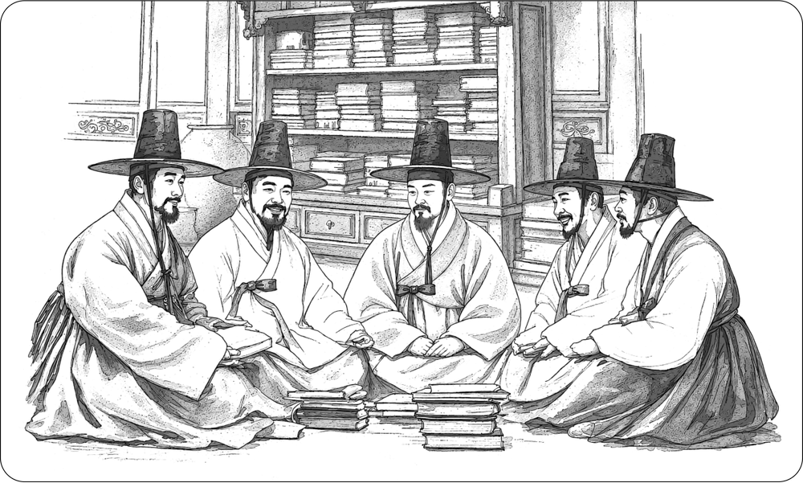

Records of Wanwigak by Distinguished Figures of the Joseon Dynasty

As Wanwigak became known for its extensive collection of rare and valuable books, its reputation spread widely, attracting distinguished figures both during Yi Ha-gon’s lifetime and in later generations.
The renowned calligrapher Yun Sun (1680–1741) wrote the plaque inscription “Wanwigak,” while his disciple Yi Gwang-sa (1705–1777) wrote the plaque inscription “Mangwollu.” During Yi Ha-gon’s lifetime, Kim Chang-heup and Yi Byeong-yeon, who were closely associated with him, mentioned Wanwigak in their writings. In later generations, figures including Sim Yuk (1685–1753), Yi Chung-ik (1744–1816), and Yi Yu-won (1814–1888) left poems and prose about the pavilion.
When Yi Jip-du, Yi Ha-gon’s grandson, was appointed magistrate of Jincheon County and brought his father, Yi Seok-no, to live with him, Yi Chung-ik composed a poem for the occasion. In it, he noted that Wanwigak contained a remarkably rich collection of books and that Yi Jip-du planned to remain there after completing his term in office to preserve the scholarly legacy of his ancestors.
Yi Yu-won (1814–1888) wrote in his essay Mangwollu:
“In Chopyeong, there is Mangwollu, which was established by Yi Ha-gon.”
He explained that it was given this name because it housed a large collection of books covering a wide range of subjects.